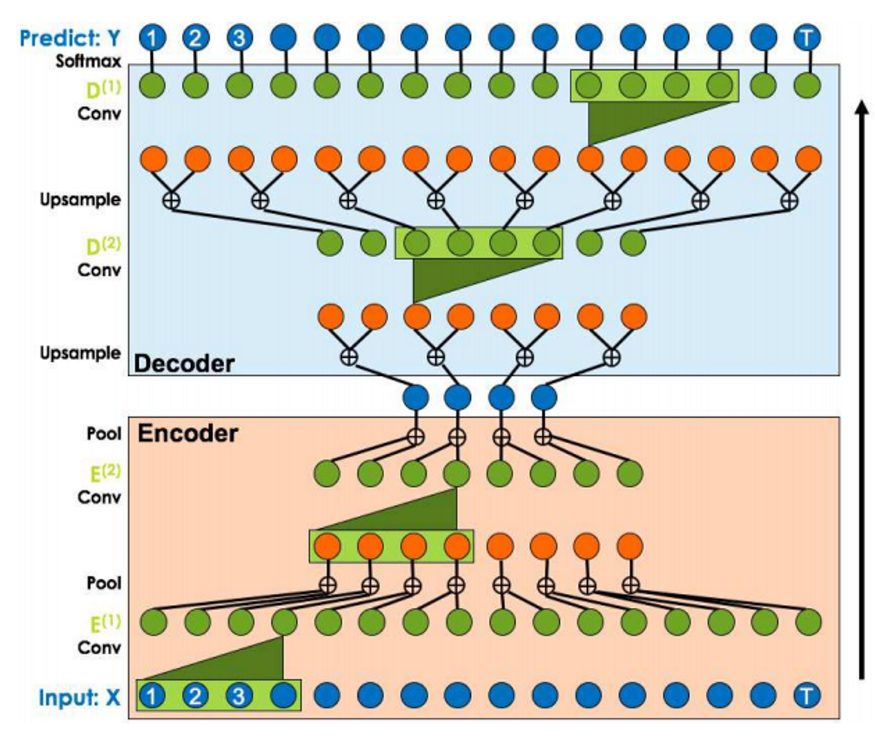

TCN - временные свёрточные сети
Сверточные нейронные сети обычно связаны с задачами классификации изображений, они являются ценными инструментами для моделирования и прогнозирования последовательности при правильных модификациях. TCN состоит из расширенных причинно-следственных одномерных сверточных слоев с одинаковой входной и выходной длиной, и данная архитектура почти не зависит от размера исходных данных.
Архитектура TCN не только более точна, чем типичные рекурсивные сети, такие как LSTM и GRU, но также проще и понятнее. Следовательно, это может быть отправной точкой для лучшего метода применения глубоких сетей к последовательностям.
Ниже представлена структура энкодера-декодера. Наиболее критические вопросы решаются следующим образом: TCN может взять ряд любой длины и на выходе получить ту же самую длину. Казуальная (casual) свертка используется там, где присутствует полностью сверточная одномерная архитектура сети. Ключевой характеристикой является то, что выходное значение в момент времени t свертывается только с теми элементами, которые произошли по времени до него.
Схема TCN
Преимущества
- Параллельность. Когда дается предложение, TCN может обрабатывать предложение параллельно, без необходимости в последовательной обработке, такой как RNN.
- Гибкое восприимчивое поле. Размер воспринимающего поля TCN определяется количеством слоев, размером ядра свертки и коэффициентом расширения. Его можно гибко настраивать под разные задачи и разные характеристики.
- Стабильный градиент. RNN часто имеет проблему исчезновения градиента и взрывного роста градиента, который в основном вызван совместным использованием параметров в разные периоды времени.Как и традиционные сверточные нейронные сети, TCN не имеет проблемы исчезновения и взрыва градиента.
- Меньше памяти. RNN необходимо сохранять информацию о каждом шаге, когда он используется, что будет занимать большой объем памяти.Сверточное ядро TCN совместно используется на одном уровне, и использование памяти ниже.
Недостатки
- TCN может не обладать такой высокой адаптируемостью при трансфертном обучении. Это связано с тем, что в разных полях объем исторической информации, необходимой для прогнозирования модели, может быть разным. Следовательно, при переносе модели из задачи, требующей меньшего количества информации в памяти, в задачу, требующую большего объема памяти, TCN может работать плохо, потому что ее принимающее поле недостаточно велико.
- TCN, описанный в документе, по-прежнему является односторонней структурой. В таких задачах, как распознавание речи и синтез речи, чистая односторонняя структура по-прежнему весьма полезна. Однако в большинстве текстов используется двусторонняя структура.Конечно, TCN можно легко расширить до двусторонней структуры, вместо использования каузальной свертки, просто используйте традиционную структуру свертки.
- В конце концов, TCN - это вариант сверточной нейронной сети. Хотя использование расширенной свертки может расширить воспринимающее поле, оно все же ограничено. По сравнению с Transformer соответствующая информация может иметь любую длину. Захватываемые характеристики все же немного хуже. Применение TCN в тексте еще предстоит проверить.